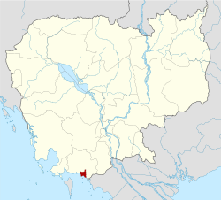
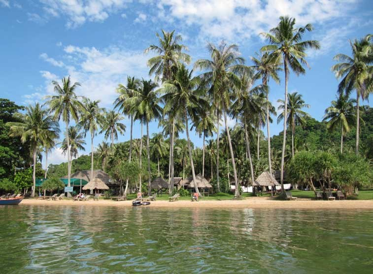
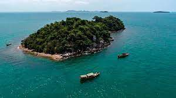

GO HOME
ខេត្ត កែប
ខេត្តកែប
គឺជាខេត្តតូចជាងគេបំផុតក្នុងប្រទេសកម្ពុជា ដែលមានផ្ទៃក្រឡាចំនួន ៣៣៦គីឡូម៉ែត្រការ៉េ(១៣០ម៉ាញ៍) ដែលមានប្រជាជនចំនួន ៤១ ៧៩៨។ ជាខេត្តមួយក្នុងចំណោមខេត្តថ្មីបំផុតរបស់កម្ពុជារួមជាមួយនឹងខេត្តប៉ៃលិន ខេត្តព្រះសីហនុ និងខេត្តត្បូងឃ្មុំ ដែលបង្កើតឡើងដោយព្រះរាជក្រឹត្យចុះថ្ងៃទី២២ ខែធ្នូ ឆ្នាំ២០០៨ ដែលបានបំបែកក្រុងកែប និងស្រុកដំណាក់ចង្អើរចេញពីខេត្តកំពត ក៏ដូចជាការកែសម្រួលព្រំប្រទល់ខេត្តមួយចំនួនផងដែរ។ ខេត្តកែបជា ខេត្តតូចជាងគេ និងមានប្រជាជនរស់នៅតិចជាងគេបំផុតរបស់កម្ពុជា។ ទីរួមខេត្តគឺក្រុងកែប ហើយខេត្តនេះមានឧទ្យានជាតិកែបថែមទៀតផង។
ទីតាំងភូមិសាស្រ្ត

ទីតាំងនៃខេត្តកែប
ខេត្តកែបគឺជាខេត្តមួយដ៏តូចបំផុតរបស់ប្រទេសកម្ពុជា [២] ដែលគ្របដណ្ដប់ផ្ទៃដីប្រមាណ 336 km2 (130 sq mi) និងមានប្រជាជនចំនួន ៤០ ២៨០ នាក់។ [១] វាគឺជាខេត្តមួយក្នុងចំណោមខេត្តថ្មីៗបំផុតនៃកម្ពុជា រួមជាមួយ ប៉ៃលិន ព្រះសីហនុ និង ត្បូងឃ្មុំ ដែលត្រូវបានបង្កើតឡើងតាមរាជក្រឹត្យថ្ងៃ ២២ ធ្នូ ២០០៨ ត្រូវបានបំបែកចេញពីខេត្តកំពត ស្របនឹងការសម្របសម្រួលព្រំសីមាខេត្តជាច្រើន។[៣][ត្រូវការអំណះអំណាង] ទីរួមខេត្តគឺក្រុងកែប ហើយក៏មានឧទ្យានជាតិមួយដែរ ដែលគេហៅថា ឧទ្យានជាតិកែប។ ខេត្តកែបជាខេត្តមួយក្នុងចំណោមខេត្តទាំង៤ដែលស្ថិតនៅតាមឆ្នេរសមុទ្រភាគនិរតីនៃប្រទេស[១]កម្ពុជា។ ខេត្តកែបស្ថិតនៅមិនប៉ុន្មានសហាតិមាត្រពីព្រំដែនកម្ពុជា- វៀតណាមឡើយ។ ក្រុងកែបធ្លាប់ជាទីក្រុងឆ្នេរសមុទ្រដ៏ពេញនិយមរបស់កម្ពុជា។ ឆ្នេរសមុទ្រនៅក្រុងកែបជាឆ្នេរព្រៃកោងកាង និង គ្រួសខ្មៅៗ ។ក្រុងកែបសំបូរគ្រឿងសមុទ្រថោកៗតែឆ្ងាញ់ ជាពិសេសគឺ ក្ដាមសមុទ្រ។ ខេត្តកែបក៍មាននូវផលិតផលជាច្រើនផងដែរដូចជា ម្រេច អំបិល ផ្លែឈើ ធុរ៉េន ស្វាយ ដូង សាវម៉ាវ ហើយនិងមានតំបន់ទេសចរណ៏ ជាច្រើនដូចជា ឆ្នេរសមុទ្រ ភ្នំ កោះ រូងភ្នំ និងរមណីយដ្ឋានជាច្រើន ។ ជាពិសេសក៍មានសណ្ឋាគារសម្រាប់ ភ្ញៀវទេសចរណ៍ជាតិ និង អន្តរជាតិសម្រាប់ស្នាក់នៅទីនោះផងដែរ។ ទឹកដីកែបហ៊ុំព័ទ្ធទាំងស្រុងដោយ[៤]ខេត្តកំពត លើកលែងតែឆ្នេរសមុទ្រ ១៦ គ.ម. ចេញ នៅខាងត្បូងជាប់ព្រំប្រទល់ឈូងសមុទ្រថៃ និង កោះភូគុក (កោះត្រល់) នៃវៀតណាម។ ព្រំខេត្តខាងលិចមានចម្ងាយ ២០ គ.ម. ពីក្រុងកំពត។ ព្រំខេត្តខាងកើតមានចម្ងាយប្រហែល ២០ គីឡូម៉ែត្រពីព្រំដែនវៀតណាម។
រដ្ធបាលខេត្ត
សាលាខេត្តកែប
ស្រុកដំណាក់ចង្អើរ វាគឺជាស្រុកមួយធំបំផុតក្នុងខេត្តនេះហើយត្រូវបានបែងចែកទៅជាពីរ ឃុំ គឺឃុំអង្កោលនៅខាងលិច និង ឃុំពងទឹកនៅខាងកើត និង ១១ ក្រុម។[៥] វាជាកន្លែងដែលជនជាតិអូស្ត្រាលីឌែវិដ-វិលសុន អាយុ ២៩ ឆ្នាំ ជនជាតិប៊្រិតថេន ម៉ាខ-ស៊្លែតថឺរ អាយុ ២៨ ឆ្នាំ និងបុរសជនជាតិ បារាំង ហ្សង់មីឈែល-ប្រាកេត អាយុ ២៧ ឆ្នាំ ត្រូវបានគេចាប់ខ្លួនដោយអង្គភាពទ័ពព្រៃខ្មែរក្រហមដឹកនាំដោយលោកមេបញ្ជាការឈូក-រិន នៅខែ មិថុនា ១៩៩៤។ [៦] កែប ក្រុងកែប ស្ថិតនៅចំកណ្ដាលនៃខេត្ត ត្រូវបានបែងចែកទៅជាបីសង្កាត់ គឺ សង្កាត់កែប នៅខាងកើតនៃទៀបកោះកែប សង្កាត់អូរក្រសារ និង សង្កាត់ព្រៃធំ នៅខាងលិច និងប្រាំក្រុម។[៧]ការផ្លាស់ប្ដូរឈ្មោះពីក្រុងកែបទៅជាខេត្តកែប(ក្នុងឆ្នាំ២០០៩) [[១] តាមគោលដៅ រដ្ឋបាល, ខេត្តកែបជាខេត្តមួយ មានស្ថានភាពការងារ ដូចនឹង ស្ថានភាពការងារនៃខេត្តមួយដែរ។ ខេត្តកែប ត្រូវបានចែកចេញជា ក្រុង១ និងស្រុក១ ក្នុងនោះរួមមាន ៥ ឃុំ និង សង្កាត់
កូដស្រុកក្រុង
ស្រុក-ក្រុងជាសអក្សរខ្មែរ
ស្រុក-ក្រុងជាសអក្សរឡាតាំង
២២០១
ស្រុកដំណាក់ង្អើរ
Damnak Chang'aeur
២២០២
ក្រុងកែប
Kep
កោះរបស់ខេត្តកែប
ទៀបកោះកែបលយទៅទិសនិរតីនៃឆកកែបជារាងត្រីកោណ។ ប្រជុំកោះ និងកូនកោះតូចៗទាំង ១៣ និងថ្មប៉ប្រះទឹក ១ស្ថិតនៅខាងកើតនៃទៀបកោះមួយនេះ: កោះកុក កោះត្បាល់ កោះទន្សាយ កោះពោធិ៍ កោះម៉ាកប្រាង កោះម៉ាតាយ កោះសារ៉ាង កោះសេះ កោះស្ងួត កោះស្វាយ កោះស្វាយព្រៃ កោះហាលត្រី កោះអង្គ្រង កោះខ្ទះនិងកោះឡិបដែលជាថ្មប៉ប្រះទឹក។
កោះទន្សាយ

កោះទន្សាយ
កោះទន្សាយតាំងនៅប្រហែល ៤,៥ សហាតិមាត្រ ភាគនិរតីនៃខេត្តកែប។ ពួកអ្នកទេសចរណ៍ត្រូវបានទាក់ទាញ ដោយឆ្នេរខ្សាច់សក្បុសពីរកន្លែង និងទឹកសមុទ្ររាក់ដែលសាកសមសម្រាប់ការហែលទឹកលេង។ បាតសមុទ្រមាន ផ្កាថ្មប៉ប្រះទឹកចម្រុះផ្សេងៗ សត្វ និង រុក្ខជាតិសមុទ្រដែលទាក់ទាញឱ្យមានពួកអ្នកស្រាវជ្រាវ និង អ្នកបរិស្ថានវិទ្យាចូលមកសិក្សា។ឈ្មោះកោះទន្សាយបានមកពីពាក្យថា រំសាយ។ កាលមួយនោះដើម្បីចៀសឱ្យផុតពីកងទ័ពរបស់នាយបញ្ជាការ ព្រះអង្គម្ចាស់សាគររាជមានការអស់សង្ឃឹមយ៉ាងខ្លាំងដោយសារតែពួករាជបរិវាររបស់ ទ្រង់មានសភាពនឿយហត់អស់ទៅហើយ។ ព្រះអង្គបានដឹកនាំកងទ័ពដែលសេសសល់ឆ្លងកាត់សមុទ្រទៅកាន់កោះមួយនៅចំពីមុខក្រុងកែប ដែលជាកន្លែងកងទ័ពបានចែកផ្លូវគ្នា។ ដោយហេតុនោះហើយ កោះនេះក៏ត្រូវគេហៅថាកោះរំសាយ កោះអម្សាយ កោះអន្សាយ និង កោះទន្សាយ ដែលយើងបានស្គាល់ដូចសព្វថ្ងៃនេះ។ រឿងមួយទៀត តាមរយៈអ្នកស្រុកដែលបានរស់នៅទីនោះតាំងពីក្មេងនៅកែបមុនឆ្នាំ ១៩៧៥ ថាកោះនេះពីមុនហៅថា កោះអន្តាយ។ វាមិនមានន័យច្បាស់លាស់ទេចំពោះពាក្យមួយនេះ។ កោះទន្សាយមានផ្ទៃដី ពីរសហាតិមាត្រក្រឡា។ នៅក្នុងសម័យសង្គមរាស្ត្រនិយមដឹកនាំ ដោយព្រះបាទនរោត្តម-សីហនុ កោះទន្សាយបានក្លាយជាកន្លែងឃុំឃាំងអ្នកទោស ហើយពួកអ្នកទោសទាំងនោះក៏ជាអ្នកការពារកោះនោះដែរ។ គេនៅឃើញមានស្លាកស្នាមខ្លះៗ បន្សល់ទុកដូចជា ផ្លូវរទេះសេះ និង ផ្ទះឈើប្រក់ស្បូវដែលសាងសង់ឡើងនាសម័យនោះ។ ភាគច្រើននៃហេដ្ឋារចនាសម្ព័ន្ នេះត្រូវបានបំផ្លិចបំផ្លាញដោយធាតុអាកាស និង សង្គ្រាមជាច្រើនទសវត្ស។ សព្វថ្ងៃនេះកោះទន្សាយគឺជាកន្លែងទាក់ទាញទេសចរណ៍ដ៏សំខាន់សម្រាប់ខេត្តកែប។ មានផ្ទះសំណាក់ប្រហែល ៨ និង ភោជនីយដ្ឋានប្រហែល ៥ បានបើកក្នុងមូលដ្ឋានកោះនោះ ដែលបម្រើសេវាអាហារសមុទ្រស្រស់ៗដ៏សំខាន់ដូចជា ក្ដាម ព្រោនបង្កង និង ត្រី។ ពេលថ្ងៃ កោះអាចនឹងមមាញឹកខ្លាំងជាមួយពួកទេសចរណ៍នៅពេលថ្ងៃ ដែលចាកចេញរង្វង់ម៉ោង៤ល្ងាច អញ្ជឹងហើយនៅពេលថ្ងៃលិច មានតែមនុស្សពីរបីនាក់ទេស្នាក់នៅពេញមួយយប់នៅទីនោះ។ អគ្គីសនីមានត្រឹមតែពីម៉ោង ៦-៩ យប់ តាមរយៈម៉ាស៊ីនភ្លើង។ ទឹកមានក្នុងរយៈពេលខ្លីកំឡុងខែប្រាំង (ធ្នូ-មេសា) និង ទូកវែងៗដែលមានធុងទឹកធំៗផ្គត់ផ្គង់នូវភាពខ្វះខាត។ សព្វថ្ងៃ មានប្រជាជន ៧ គ្រួសាររស់នៅលើកោះនេះ។ ពួកគេប្រកបរបរនេសាទនិងដាំដើមដូង។
កោះពោធិ៍

កោះពោធិ៍
កោះពោធិ៍គឺជាកោះមួយទៀតដែលមានទេសភាពស្រស់ស្អាតដែល ត្រូវនឹងចំណូលចិត្តចំពោះភ្ញៀវដែលនិយមគោលដៅបរិស្ថានទេសចរណ៍ ហើយ វាក៏មានឆ្នេរខ្សាច់ល្អប្រកបដោយភាពស្ងប់ស្ងាត់ផងដែរ។ កោះនេះលម្អដោយឆ្នេរខ្សាច់ពណ៌ពងមាន់ ព័ទ្ធជុំវិញដោយព្រៃឈើពណ៌បៃតងស្រស់។ កោះពោធិ៍ គឺជាភូមិដ្ឋានរបស់អ្នកនេសាទប្រមាណជា ៥០ គ្រួសារ ដែលរស់នៅ យ៉ាងស្ងាត់ស្ងៀមលើកោះនៃភូមិសាស្ត្រខេត្តកែបនេះ។ វាក៏ដូចនឹងសហគមន៍ អ្នកនេសាទឯ ទៀតៗផងដែរ អ្នកភូមិកោះពោធិ៍រស់នៅដោយសេចក្តីថ្លៃថ្នូរ និង សកម្មក្នុងអាជីពជាអ្នកនេសាទរបស់ខ្លួន។ ប្រជាពលរដ្ឋនៅកោះពោធិ៍ ១០០ ភាគរយគឺជាអ្ន កនេសាទ ពួកគេពុំដែលចាកចេញពីមហាសាគរទៅរកដី គោកឡើយ។ ទីនោះពុំមានសាលារៀនសម្រាប់កុមារ គ្មានមន្ទីរពេទ្យ ហើយ ក៏គ្មានអគ្គិសនីប្រើប្រាស់ដែ រ។ វាជាភូមិដាច់ស្រយាលដែលមានចម្ងាយប្រហែល ១០ សហាតិមាត្រពីក្រុងកែប។ដើម្បីទៅដល់កោះពោធិ៍គឺត្រូវធ្វើដំណើរពីមួយម៉ោងទៅពីរម៉ោង ពោលគឺយឺត ឬ លឿនទៅតាមអាកាសធាតុសមុទ្រដែលមានរលកធំ ឬ តូច។ ដើម្បីចំណាយតិច ភ្ញៀវទាំងឡាយគួរទិញសំបុត្រទូកទៅកោះពោធិ៍វិញ ត្រូវចំណាយ ៤០ ដុល្លារទាំង ទៅទាំងមក ឬក៏ភ្ញៀវទៅកោះទន្សាយ ក្នុងតម្លៃទៅមក ២០ ដុល្លារ សិន ហើយនៅពេលជិះអ្នកអាចចរចាជាមួយអ្នកបើកទូកដោយផ្ទាល់ឱ្យជូនទៅ កោះពោធិ៍បន្តទៀតក៏បាន។